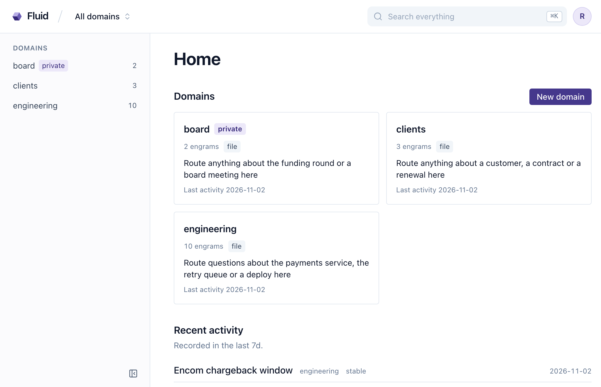

19 Identity and access
Every action on a shared instance has a name attached, and the name is a person’s. Chapter 16 ended on that line. This chapter is what follows from taking it seriously: who is acting when an engram changes, who may see a domain and who may change it, how a login at the company’s identity provider becomes an account here, what the rules cover, the few things you do on an ordinary Tuesday and how access follows GitHub on a server with its own GitHub App. It ends where the whole book has been walking: a colleague who has earned access, by name.
19.1 Who is acting
People arrive as accounts, by whichever of chapter 16’s doors they came through. Once inside there’s one account with one role (none, viewer, editor or admin), and everything the person does is done as it (Chapter 16).
Agents arrive as somebody’s agent. Chapter 16 issued the token, and what it means is the point here. An authenticated agent is its user for the length of the session, with that person’s visibility, that person’s write rights, that person’s share identity in a team domain and that person’s name in the provenance of everything it captures, beside the client that acted. Programs in Tron look like their users and act for them, and that’s the picture: the agent’s name is its user’s name with an agent designation after it. The CLI and a stdio session on the server stay the machine’s owner, as chapter 16 said. An agent that runs unattended, a build runner say, gets an account of its own that an admin answers for, with no password and one token, so what it captures carries that account’s name; on the runner the two remote variables of Section 16.10 point its Crystalline at the server.
The token’s lifecycle is what makes the arrangement safe, and it’s worth walking once. It’s minted on the profile’s Agent access card, or by an admin with crystalline users mcp-token <name>. It begins with a fixed prefix, cmt_, so a leaked one is recognizable in a log and findable with grep across a repository or a chat export. It’s shown once, and what the instance keeps is a hash, so a copied accounts database yields no working credential. It lives in exactly one place after that, the Authorization: Bearer header of the harness’s MCP registration on the person’s own machine. It has no expiry of its own, because on a self-hosted instance revocation is the story. Every request looks the token up, so a revoked token fails on the next call. Rotation issues the replacement and revokes the old one in one motion, so the registration is updated in one edit and nothing is ever half-rotated. Every account may issue its own, viewers included, and that leaks no capability: a viewer’s agent is read-only by construction, because it is a viewer. A read-only instance still issues them, because the mode protects the knowledge and a token is account state: with agent authentication on, a read-only server is where an agent can’t connect until it has one. On an instance where hosted clients sign in there’s a second kind of credential at the same door, the access token a hosted client holds, prefixed coa_, and the gate checks both kinds on every request (chapter 16 has how such a client comes by one).
19.2 Membership on a private domain
A domain is visible to every signed-in user unless it’s made private, and chapter 16 said who sees it then: the owner, the instance’s admins and invited members at one of four levels (none, viewer, editor or manager). The top rung deserves a word. A manager runs the membership, inviting, removing and granting any level up to manager itself, which is the job of a lead who shouldn’t have to fetch the owner for every new joiner. What a manager cannot do is change the domain’s visibility, transfer it or delete it, because a manager who could flip a domain public would be an owner by another name. Those three stay with the one owner and with the admins, so that a domain always has exactly one person answerable for its existence, and a way to recover it when that person leaves.
Two of chapter 16’s truths carry over unchanged, and Fluid prints the second under the Make private button: admins see every domain, private ones included, and a private domain protects from the instance’s other users, never from whoever operates the machine.
The instance role and the membership level are different questions, and a write needs both to say yes. An invitation widens what an account may reach, never what its instance role lets it do, so an instance viewer invited as an editor reads the domain and writes nothing, because an invitation never widens a role. On a team domain under the server’s own GitHub App the membership isn’t asked and the instance role no longer caps a write: the person’s role on the repository decides, as the last section of this chapter explains.
A second question joins those two, because Reflection gives people a way to work on a domain without the engrams. Every account, and every membership of a private domain, carries a Reflection level beside its level on the engrams. The engram side has a value below viewer, none, for somebody who sees no engram at all. A reader reads the reflections and comments, and a contributor also edits them. Writing them from the engrams is curating, and you never grant it: everyone from engram editor up curates, and Fluid shows them as curators. A viewer of the engrams is a reader without anyone setting a level. A Reflection level you do set only ever raises that, so a person with knowledge none and Reflection contributor edits the reflections and never sees an engram. A member of a private domain at none needs a Reflection level, or the membership is refused. Chapter 12 tells why the two are kept apart (Chapter 12).
19.3 Linking identities
A team that adopts single sign-on after running local accounts for a while has a linking problem: Kane has an account named kane and an identity at the provider, and they should be one person. The tempting answer is to match on email, and it’s the classic foot-gun of this integration, which is why Crystalline refuses it. An email address is presentation: the provider asserts it, the person can change it and matching on it would let whoever controls an address at the provider walk into the local account that happens to carry the same one. The address is often not even the person’s to keep: a provider that lets people edit their own email, or a second provider added a year later, is all it takes. Chapter 16 gave the rule that follows, issuer and subject and nothing else, so the sign-in gets a fresh account and joining the two is an explicit act with a name on it. The signed-in local user links from the SSO identity section of their profile. An admin does it from the terminal, crystalline users link kane --issuer <issuer> --subject <subject>, which is also how an admin repairs links after a provider re-registration changes every subject. Unlinking refuses when it would leave an account with no way in, and the refusal names crystalline users passwd as the way to give it one. The --force flag on the unlink is for the re-registration repair, where the account is unreachable for the moment between the old link going and the new one landing. An identity already linked to another account is never taken by a second link, so an admin moves it.
19.4 What the rules cover
A rule that covers most surfaces covers none, because the agent will find the one it misses. Visibility follows the caller onto every read surface there is: search, read_engram, build_context, recent_activity, the routing briefing at session start, the graph, exports, the maintenance sweep and Fluid’s domain list and tree. To someone who may not see a domain it’s absent, answered exactly as a domain that was never registered would be, for the reason chapter 16 gave. Writes check for editor or better. An agent inherits all of it from its user and administers no membership: there’s no tool for changing one, on purpose, so a persuasive prompt cannot talk an agent into inviting itself. What it may change about the instance itself follows its user’s role too: registering a domain, writing an instance setting and deciding what a domain installs take an admin, and reading any of them back is open to everyone. Unregistering a domain or changing its policies takes an admin or, for a private domain, its owner. On an instance that leaves agent authentication off, the open tier that remains sees only the domains everyone sees, except on a server with a GitHub App, where it acts on the team domains as the account github.agent_identity names (private ones included, never above editor) or as an anonymous visitor when that setting names nobody. Turn agent authentication on there. It may change a domain’s policies wherever it may write, but it’s refused outright when it tries to unregister a domain. A private domain with a team origin is two questions: who may see it here is the instance’s, and who may push to the repository is the forge’s. On a server with its own GitHub App it’s one question, and GitHub answers it.
19.5 Day to day
Most of this is one section, Members, in a domain’s settings in Fluid (the domain page’s More actions menu leads there): the members with their level badges, an invite box (a username, a level and a Reflection level), remove, leave and, for the owner or an admin, transfer. The switch to private and back to shared sits further down, in the Danger zone, and asks you to type the domain’s name first. Private domains carry a badge in the domain list (Figure 19.1). The terminal does the same for a script or an admin already there: crystalline domain members board list, crystalline domain members board add lambert --level viewer, crystalline domain members board remove lambert, crystalline domain visibility board private --owner dallas and crystalline domain transfer board ripley. The CLI is the machine operator and passes no role gate.

A year of running a domain comes down to inviting, promoting and handing over. Inviting is the Members section or the add verb, at the level the person needs today, which is usually viewer. Leaving is the member’s own button (no manager required). Promoting is setting the level again, viewer to editor when their captures have earned it, editor to manager when they should be the one inviting. Handing over is transfer, for the day the owner leaves: the new owner is the owner from that moment, and the old one is a stranger to the domain unless re-invited. When they do leave, an admin disables or deletes the account, and deleting sweeps what the account had connected: its agent tokens, its identity links and the grants it gave hosted clients. Its personal share credential goes too when the account is removed on the server with crystalline users remove. A private domain it owned is left with no owner, and only an admin can administer it, so transfer it first. The agent that acted as that person is refused at the door on its next request, like any other stranger.
Gaff joins the club for a season, on the strength of one recommendation. He signs in on his first evening with the login you made him and lands as a viewer, the role every new account starts with. He issues himself a token on his profile and pastes it into his harness. His agent is a viewer from its first call, reading club and writing nowhere, without anyone having configured a thing about agents. By the third meeting the notes he keeps sending you to capture for him are the best anyone has written about Dune, and you promote him to editor. The next capture his agent makes lands in club under his name, with his harness named as the client in the provenance.
Later Dallas moves abroad and transfers the private committee domain he keeps for the club’s money to you from the Members section, then finds he can no longer see it, which is what he wanted. He never wanted an admin login, and owning the domain never needed one. When Gaff’s season ends you delete his account. His token dies with it, and his agent’s next session is refused before it opens. His engrams stay, every one recording that his agent wrote it for him, and a month later a new member’s agent recalls Gaff’s take on Dune in a session that never heard his name.
Accounts, agent tokens, identity links, domain visibility and membership all live in one small database beside the index, and none of it is derived, so no rebuild of the index can touch it, and a wipe and resync leaves every permission where it was. Each request resolves the caller once, into a scope: the machine owner for the CLI and stdio, an account with its admin flag for a Fluid session or an authenticated agent, an anonymous tier for a published archive, or an agent where authentication is off. Every engine verb filters on that scope, so a surface added tomorrow is filtered the way search is filtered today. The verbs that change the instance rather than its knowledge read the same scope for the admin flag: add_domain, a configure that sets, unsets or connects for the instance (linking your own GitHub account on a server with an App needs no admin) and provision with allow, deny or apply. A bare configure and provision status stay reads, and remove_domain and a configure that changes one domain ask the domain instead: its owner or an admin may call them, and on the open tier only configure lets an anonymous caller through.
19.6 Access that follows GitHub
On a server with its own GitHub App (Chapter 16), a domain connected to a repository follows that repository. Each person links their GitHub account once, and from then on their role on the repository decides what they may do with the domain here. Write access or more writes, and the instance role doesn’t cap it: an instance viewer with write access on GitHub writes, in Fluid too, while an instance editor with only read access, or with no link, writes nothing. Read access reads. An admin or maintainer on GitHub also switches the domain between shared and private and manages its Reflection collaborators. Owners, members and invitations set in Crystalline don’t count on such a domain, so the Members section says that access follows GitHub and refuses a change, which belongs on GitHub. An account’s write list still applies.
Who reads is still the shared or private switch. A shared domain is read by everyone signed in at viewer or above, linked or not. A private one is read only by linked people with read access or more on the repository, and only through its list of collaborators: the members of a company’s GitHub Enterprise who read an internal repository without being listed there don’t read the domain. Two rules come before GitHub’s answer. An account with the instance role none gets nothing from GitHub, and the instance admins and the machine owner get everything.
The link is made from your profile in Fluid, from a single-use link an agent signed in to the server hands you or from a terminal, and it works only for the account that asked for it, so a forwarded link never links somebody else. A pasted token or a personal GitHub sign-in made without the App is refused on such a server. An agent account gets its access the same way, through a GitHub bot user that an admin links to it (Chapter 14).
The Reflection follows GitHub on its own axis. A GitHub writer curates, a GitHub reader reads and comments, and a Reflection collaborator of one domain is the way in for somebody GitHub knows nothing about. That grant gives one domain’s Reflection to an account as reader or contributor, works for an account with the instance role none and only ever raises: it never opens an engram the account couldn’t see before.
A domain whose repository loses the App (it was removed from the installation, deleted or moved to another owner) stays connected but closed. Only the instance admins and the machine owner get in, and no other rule opens it, a Reflection grant included. The admin banner in Fluid and the health check name each closed domain and say why. Installing the App on the repository again opens it without a restart, and a domain whose repository moved to another owner stays closed until an admin connects it again to where the repository is now.
Here the agent is the chat app on your phone, signed in to the club’s server itself:
You: Link my GitHub account to the club's server.
Agent: Open this link in a browser where you're signed in to
https://club.example.com as yourself. It works once, within
ten minutes: <link>. GitHub asks you to authorize the
club's App and sends you back to your profile.Your book club’s server, the one you run, gets a GitHub App of its own one evening. You press Create GitHub App in Fluid with the organization left empty, and Dallas confirms on GitHub, signed in as himself, so the App belongs to the account that holds the club’s repositories. He installs it on the private dallas/book-club, where club lives, and on dallas/club-committee, a private repository made for committee, the domain that keeps the club’s money, with you as its second collaborator. You connect committee to it as private, and from then on the repositories decide. Kane, who already has read access on dallas/book-club, links his GitHub account from his profile in Fluid. club is shared, so he reads it and comments in its Reflection as before, and the day the club gives him write access on dallas/book-club his agent writes there too. committee is read by the people the repository lists and by the server’s admins, whatever the Members section said before, so Dallas, who owns dallas/club-committee, reads it again: GitHub says he may, and GitHub decides now.
Lambert follows the club on her phone and sees no engrams, and the next morning she can’t open a page of the club’s Reflection. Her account has the instance role none, and on a domain GitHub decides that gets her nothing, her account’s Reflection level included. You give her one for club alone, as a contributor, on the Members section under Reflection collaborators, and she’s back on every page of the club’s Reflection without a single engram coming into view.
From a terminal, crystalline connect github --personal links your account through the App’s device flow (Chapter 16 says what the App needs for it). A domain is connected with the question answered, crystalline domain add committee --origin dallas/club-committee --readers private. A GitHub admin or maintainer, or an instance admin, switches it between shared and private on the Members section, and crystalline domain visibility committee private does the same from the server, and no account becomes its owner, so no person inherits the domain if the App goes later. crystalline domain members club reflection add lambert --level contributor gives the grant, reflection remove lambert takes it away, and crystalline domain members club list shows the Reflection collaborators beside the members. On such a domain members add, members remove and domain transfer refuse with “access to this domain follows GitHub; change it on GitHub”. GitHub’s admin and maintain roles count as manager, write as editor and triage and read as viewer.
Crystalline asks GitHub once per repository who the collaborators are and whether the repository is public, and uses the answer for five minutes. A webhook from GitHub only makes it ask again at once, and no delivery ever grants anything by itself. When GitHub can’t be reached, the last answer holds for one more hour and the admin banner says since when; after that GitHub grants nothing on that repository until it answers again, so a shared domain is read by everyone signed in and a private one by the admins alone. Unlinking or disabling an account takes effect on the next request.
A new hire earns access a door at a time: a badge on the first day, a room the next week and after a while nobody remembers the meeting where they were let in. The agent walks the same doors, by name, and everything it has ever captured says whose colleague it was.
People act as accounts and agents act as their user, through a per-user token that’s shown once, stored hashed, revoked in one motion and issuable by everyone. The CLI and stdio are the machine owner. A private domain is visible to its owner, the instance’s admins and invited members at none, viewer, editor or manager level, with visibility, transfer and deletion reserved to the owner and admins. It protects from other users, not from whoever runs the machine. Identities link explicitly, keyed on issuer and subject, never by email. Visibility is enforced on every read surface and a hidden domain reads as absent. Writes need editor or better on the domain and on the instance, and agents inherit and administer no membership. On a server with its own GitHub App a team domain follows its repository: write access writes, read access reads, an instance role none gets nothing and a Reflection collaborator grant opens one domain’s Reflection. Invite, promote and transfer from the Members section of the domain’s settings or the crystalline domain verbs, and delete an account to take its tokens, links and grants with it, once what it owned has been transferred.